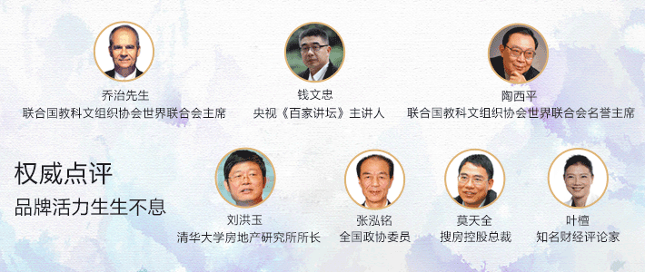
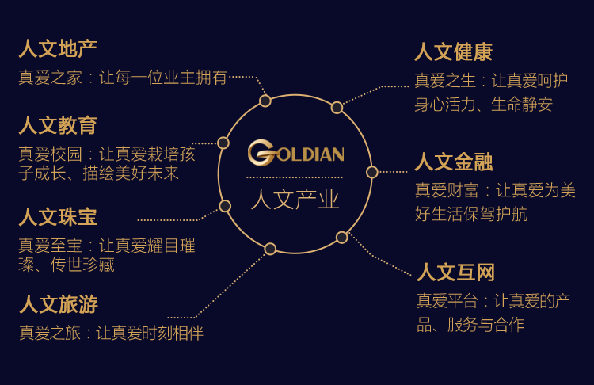
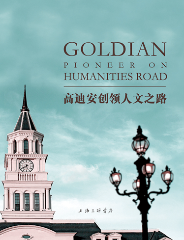

-
创领真爱人文之路
高迪安集团成立于1997年，是兼具全球化视野和人文情怀的的综合性企业集团，致力于真爱人文事业的发展，旗下拥有人文地产、人文教育、人文珠宝、人文金融、人文健康、人文旅游、人文互联网等七大产业板块。“真爱人文”是高迪安的价值灵魂，也是企业经营发展的原则和目标。
高迪安的“真爱人文”，缘起于一种“人文历史基因”。先后创建了“金钟苑”、“香梅花园”、“御珑宫廷”、“金泉湾”等著名的国际精品人文地产项目。
高迪安的“真爱人文”，浓缩于独创的“三大人文艺术瑰宝——和平艾琳娜、海马龙、海马凤”。传播着“和平、和谐、和美”的人文理念。
高迪安的“真爱人文”，共鸣于掌声响起的国际交流。在联合国总部获颁“世界和平贡献奖”， 先后与卡特总统、克林顿总统、高克总统面对面交流，向众人传递和分享着属于全社会的真爱人文之光。
高迪安的“真爱人文”，彰显于设立的以“真爱与和平”为主题的世界性节日——“艾琳娜9·9国际真爱节”，在全球倡导“家庭和睦之互爱、社会和谐之博爱、世界和平之大爱”。
-
1997-2018
荣誉历程
20182018
1月10日，第五届中国中小企业全球发展论坛在杭州举行。高迪安集团董事长顾文元先生作为中小企业杰出企业家代表出席会议。并与英国前首相、英国“一带一路”投资基金负责人戴维·卡梅伦先生合影留念。
20172017
11月28日，美国前总统奥巴马先生受邀在上海世博中心举行演讲会，高迪安集团董事长顾文元先生作为中国杰出企业家代表受邀出席演讲会。并与德国武尔夫总统交流真爱人文，赠予真爱人文艺术瑰宝“海马龙”、“海马凤”。
11月11日，集团董事长顾文元先生与法国前总理让-皮埃尔·拉法兰先生亲切会面。将象征着和平、真爱的人文艺术瑰宝：海马龙、海马凤，赠送给了拉法兰先生，并合影留念。
9月9号,艾琳娜9·9国际真爱节暨“真爱人文教育”国际研讨会在昆山御珑宫廷举行。
9月，高迪安邀请国际著名音乐人、阿里娱乐战略委员会主席高晓松为9·9真爱制作主题曲《久久真爱》，并唱响全球。
4月，董事长顾文元先生出席2017年博鳌亚洲论坛，与博鳌亚洲论坛秘书长周文重先生亲切交流。期间，受海南省政府之邀参加了海南省人民政府商务早餐会，与海南省省长刘赐贵先生探讨人文旅游的合作与发展。
3月25日，高迪安人文地产——金大元.御珑宫廷，迎来首期盛大开启！从规划设计到竣工，历经5年打磨，奢华高雅的纯法式别墅在昆山揭开了神秘面纱。
20162016
12月，“高迪安哈佛教授国际合作教育科研中心”揭牌仪式，在美国哈佛大学全球道德教育大会期间隆重举行。高迪安集团董事长顾文元先生、美国哈佛大学教育学院Catherine E. Snow教授、Robert L. Selman教授、加拿大卡尔加里大学赵旭教授共同为中心揭牌。
12月，金御（上海）股权投资基金管理公司正式成立，依托高迪安集团开展以地产并购、股权投资、文化旅游、产业基金等为方向的基金业务。
11月 浦发银行联名卡银行审批通过，未来将与集团发行联名信用卡。
10月，上海御珑宫廷第二批物业交房 。
10月，高迪安集团与美国哈佛大学教育学院Catherine E. Snow教授、Robert L. Selman教授、加拿大卡尔加里大学赵旭教授、中国华东师范大学周兢教授签署了“高迪安哈佛教授教育科研中心国际合作协议”。
10月，高迪安出席第七届国际资本峰会，董事长顾文元先生与原中国商务部副部长、原博鳌亚洲论坛秘书长龙永图先生以及法国前外交部秘书长Gerard Errera先生、法国前总理Jean-Pierr先生共叙真爱人文话题。
董事长顾文元先生与国际互联网大师尼古拉斯先生结缘，共举真爱。
马会关注自闭症儿童慈善新闻发布会在 上海御珑宫廷举行。
由林志玲倾情演绎的真爱微电影上线，讲述“真爱是365天，是终生追求的信仰”，影片点击量突破3000万。
9月9日，第二届“艾琳娜9·9国际真爱节”盛典在昆山御珑宫廷举行。
杂交水稻之父袁隆平先生为9·9国际真爱节题词。
真爱手心亮相纽约时代广场，各国同胞畅聊真爱。
9月，高迪安凭借独特的创新理念，荣获2016年第11届亚洲品牌盛典“亚洲十大创新力企业”奖项，高迪安品牌在国际舞台大放异彩。
董事长顾文元先生受邀出席德国总统花园庆典，在派对上将海马龙、海马凤赠予德国联邦总统阿希姆·高克先生，高克总统盛赞“这是我见过的最美的礼物”。
董事长顾文元先生与德国巴伐利亚王子亲切交流，共比“真爱手心”。
董事长顾文元先生出席杭州G20-B20峰会，共话世界经济发展，董事长现场聆听习主席主旨演讲。
8月，艾琳娜国际幼儿园（昆山御珑宫廷）室内装饰设计项目启动。
5月，美国哈佛大学教育学院教育学教授、医学院心理学双学科终生教授Robert E. Snow教授、加拿大卡尔加里大学教授、华东师范大学教育学部知名教授周兢教授来上海御珑宫廷考察访问，洽谈合作。
20152015
中国房地产专业新锐品牌价值TOP10创新人文地产。
中国房地产高端项目品牌价值TOP10。
昆山2015年度最受欢迎恩文地产。
荣获2015年上半年房地产项目测评A+级以上优秀项目。
荣获2015年特色地产运营——“创新人文地产”。
昆山御珑宫廷荣获人文地产突出贡献奖。
9月9日，高贵典雅、集智慧与美貌于一身的和平艾琳娜，点亮了《纽约时报》、《世界日报》、《香港文汇报》等国际知名权威媒体报端，向全世界倡导、传递着真爱的力量。
9 月9 日，首届“艾琳娜9·9国际真爱节”盛典举行。国际巨星林志玲以真爱天使和御珑宫廷首位明星业主的身份亮相，带领99对爱人共同为真爱许愿，并与“互爱、博爱、大爱”嘉宾代表分享真爱感言。
董事长顾文元先生作为唯一中国企业家代表， 参加美国前总统克林顿的慈善家宴。宴会上，董事长顾文元先生就人文与真爱，与克林顿及他的女儿切尔西进行了深入交流，克林顿在真爱印鉴上签字留念。
联合国教科文组织协会世界联合会主席BHATNAGAR先生发来贺信，称“艾琳娜9·9 国际真爱节对真爱与和平的推广，是诺贝尔式的努力和贡献”。
联合国教科文组织协会世界联合会第九次代表大会在北京召开，董事长顾文元先生受邀出席会议，现场倡导全球“9·9 真爱”，获颁本次大会“突出贡献奖”。
联合国教科文组织协会世界联合会第九次代表大会在北京召开，董事长顾文元先生受邀出席会议，现场倡导全球“9·9 真爱”，获颁本次大会“突出贡献奖”。
董事顾伟伦夫妇与美国现任交通部部长赵小兰夫妇在Mrs. Jdivia Bloch教育基金会慈善晚宴上探讨真爱人文。
20142014
香梅和平御园落成。
“御珑宫廷”开盘。
“御珑宫廷”石材工程荣获2014第六届中国长三角优秀石材建设工程金石综合大奖。
高迪安集团荣获2014中国房地产专业新锐品牌价值TOP10。
“御珑宫廷”荣获《2014上海测评推荐综合价值TOP10——法式人文艺术特色经典NO。1》。
“御珑宫廷”荣获2014中国房地产地方项目品牌价值TOP10。
“御珑宫廷”被评为2014年度人文地产品质标杆称号。
董事长顾文元先生向联合国赠送“海马龙和平印鉴”及人文艺术瑰宝之一—— 海马龙，高迪安集团董事长顾文元先生于联合国总部获颁“世界和平贡献奖”，联合国助理秘书长ThomasGass亲自颁奖。
董事长顾文元先生向前总统吉米·卡特及夫人赠送人文艺术瑰宝——“海马龙”、“海马凤”，同时卡特总统也向顾文元先生赠送其签字的最新著作《她们的世界——来自卡特总统的疾呼》。
高迪安集团凭借对东西方人文艺术地产的探索创新与古典法式建筑的不懈坚持，荣膺第14届博鳌论坛“中国人文地产创新奖”。
亚欧教育论坛联合国教科文组织颁发荣誉证书表彰高迪安集团为促进世界多元文化交流作出了杰出贡献。
陈纳德将军、陈香梅女士展览厅落成。
由上海国际商会、高迪安集团主办的“人文情怀·和平使命”中外企业文化交流暨和平艾琳娜揭幕盛典在高迪安·御珑宫廷举办。
20132013
董事长顾文元先生参加美国十万强基金会开幕及年度大会。
董事长顾文元先生参加印尼APEC峰会。
集团被评选为2013年度浦东新区房地产开发企业诚信承诺先进企业。
“御珑宫廷”摘得“2013年高端建筑品质金奖”的殊荣+级以上优秀项目。
御珑宫廷（昆山）开工。
20122012
董事长顾文元先生随国家主席习近平出访美国华盛顿。
董事长顾文元先生出席美国洛杉矶中美经贸合作论坛。
荣获2012年度浦东新区房地产开发企业诚信承诺先进企业。
御珑宫廷（上海）开工。
20112011
董事长顾文元先生随同胡锦涛主席出访美国参加中美商务理事会议。
香梅和平御园奠基。
20102010
“香梅花园”王座正式开盘。
荣获2010年度“上海地产最具收藏价值年度豪宅”荣誉称号“。
“香梅花园”荣获“2010中国房地产项目品牌价值TPO10”荣誉证书。
20092009
集团出资100万元设立的“浦东新侨创业高迪安专项基金”。
董事长顾文元先生参加亚太经合组织工商领导人峰会。
陈香梅教育基金会捐赠100万元人民币予协和教育集团，支持协和双语学校开展创新模式的中西结合式新型教育，董事长顾文元先生获聘为协和双语学校荣誉校董。
唐镇地块项目开发公司正式注册成立。
20082008
通过公开挂牌方式获得浦东新区唐镇地块。
“香梅花园”五期3号楼正式开盘。
“香梅花园”被评为2008－2009中国地产财富100十大最具投资价值品牌。
“香梅花园”项目2008～2009获中国十大成熟社区称呼。
“香梅花园”项目2008～2009荣获中国十大精装修典型楼盘奖。
20072007
三甲港天然温泉之乡-上海滨海温泉大酒店”立项获批。
通过公开挂牌方式获得昆山城西住宅地块。
收购上海神州投资有限公司以及其旗下新地苑物业。
20062006
赞助并冠名“香梅之夜，金色之路”公益慈善义演,在上海耀中国际学校举行。
“香梅花园”四期隆重开盘。
上海国际化品质典范楼盘综合金奖证书联合国生态环境住宅金奖证书。
20052005
“香梅花园”荣获“2005上海国际化品质典范楼盘”金奖。
“香梅花园”三期在澳洲、美国四大城市-纽约、洛杉矶、华盛顿、旧金山举办展销会，提升了项目的海外影响力。
“香梅花园”三期“香梅华府”隆重开盘。
20042004
“香梅花园之夜——第五届上海国际音乐烟花节”开幕。在上海市旅游事业管理委员会、浦东新区人民政府的大力支持下，集团协办了本届上海旅游节的重要组成部分——浦东旅游文化“形象大使”活动。
在韩国首都汉城举办展销会，得到了韩国客户的高度认可。
集团为陈香梅女士举办“香梅80华诞”庆祝会。全国政协常委张伟超、中国侨联顾问唐文生、中国侨联副主席杨玉环、上海市统战部副部长金闽珠、上海市侨办主任吕淑萍等亲临现场祝贺。
20032003
倡仪并协办“高迪安香梅花园杯”诗词书法大奖赛。陈香梅女士亲临现场为获奖者颁奖。
“香梅花园”二期隆重开盘。
在我国台湾省台北市举办展销会，得到了海外人士的一致好评。“香梅花园巡展”在新加坡、香港获得成功。首次破冰之旅取得中外人士的高度关注及较好的销售业绩。
20022002
独家赞助“2002首届上海传媒高峰论坛”。陈香梅女士以一名女记者的身份参加了此次论坛。
“香梅花园”一期正式开盘。时任上海市副市长周禹鹏、时任上海市统战部部长现任中央。统战部副部长黄跃金等出席开幕仪式。
20012001
“香梅花园”奠基，“香梅书苑”成立。
董事长顾文元先生陪同陈香梅女士、时任上海市市委统。战部部长现任中央统战部副部长黄跃金共同为“香梅花园”铲土奠基。
19991999
集团房产项目“金钟苑”开盘。
19971997
高迪安（上海）有限公司成立。
-

因为文人情怀
所以令人神往